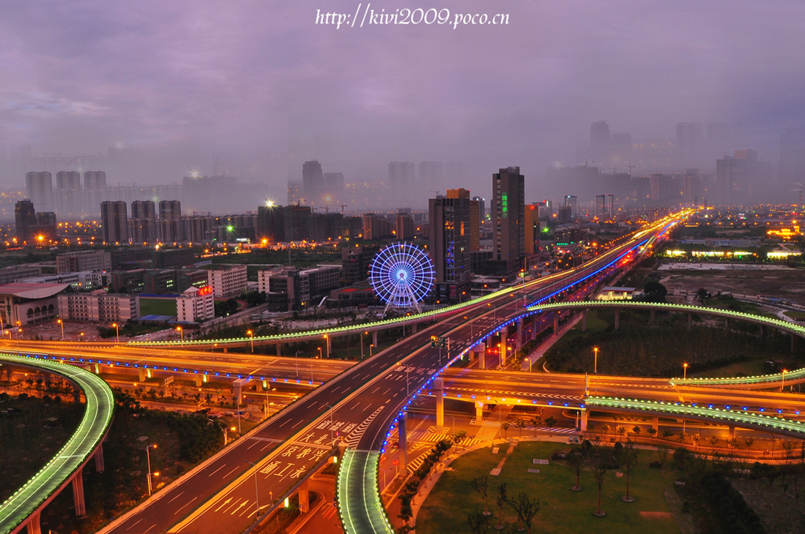

There are some photos about my hometown NanTong
Nantong (Chinese: 南通; pinyin: Nántōng; alternate names: Nan-t'ung,
Nantung, Tongzhou, or Tungchow; Qihai dialect: [nie tʰoŋ]) is a
prefecture-level city in Jiangsu province, China. Located on the northern
bank of the Yangtze River, near the river mouth. Nantong is a vital river port
bordering Yancheng to the north, Taizhou to the west, Suzhou and Shanghai
to the south across the river, and the East China Sea to the east. Its current
population is 7,282,835 at the 2010 census, 1,994,708 of whom live in the
built-up area made up of three urban districts.
